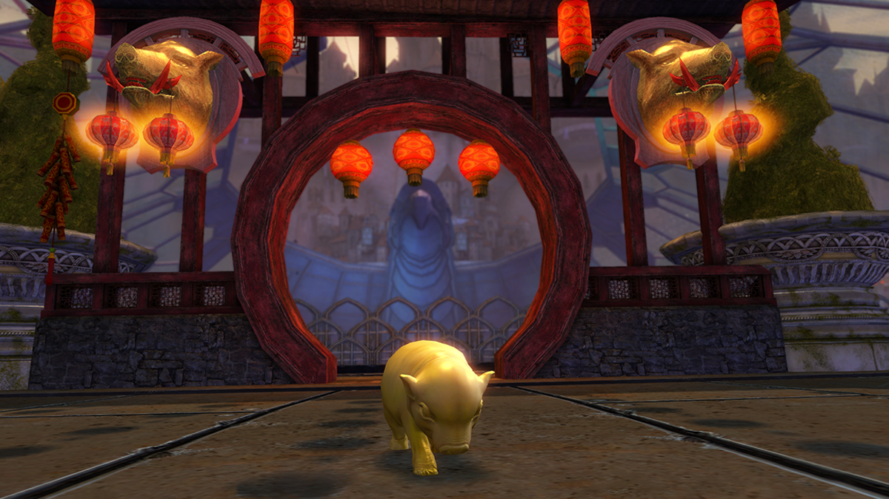

22.01.2019
Newsy | Eventy Cykliczne
Lunar New Year 2019
Kurz po ostatnim straciu z Kralkatorikiem ledwo opadł, a w grze już czeka na nas po raz kolejny cykliczny event – Lunar New Year. Zabawa zaczęła się 22 stycznia i potrwa najprawdopodobniej do 12 lutego. Ponownie powraca Dragon Bash Arena, Lucky Envelopes, zmieniony wystrój Divinity Reach, oraz race po całym mieście z wykorzystaniem mountów – Ci, którzy nie kupili dodatku wciąż nie będą poszkodowani. Gra bowiem ponownie oferuje możliwośc wypożyczenia mounta na czas zabawy za niewielką opłatą. W kwestii achivementów mamy dwie znaczące zmiany. Po pierwsze zeszłoroczny achevement z wpładaniem pierożków dla Drooburta został zmieniony tak, by ograniczyć ilość pochłanianych pieniędzy/ Po drugie ponownie jak przy wszystkich cyklicznych eventach otrzytmujemy coroczny achievement warty aż 50AP. Możemy go wykonywać aż do uzyskania progu 1000 AP, który osiągniemy najwcześniej w... 2038. Zapowaida się na prawdę długa zabawa ;)!
Na szczególną uwagę zasługują koperty, które możemy kupić w cenie 1g (limit 16/dzień). Jest to okazja do łatwego zarobku – sprzedając je na trading poście dostaniemy więcej. Można też zaryzykować i otworzyć, dużej straty nie odnotujemy (minimalny zwrot oscyluje w okolicach 14g), ale jest to działanie generalnie średnio opłacalne. Opcja ze sprzedażą daje nam niemal pewny zysk (koperty schodzą bardzo szybko). Kolejną atrakcją jest możliwość zrobienia egzotycznego plecaka, który da nam dwa skiny (rare i exotic) - receptura do znalezienia tutaj. Ponadto mamy też możliwość zdobycia nowych miniaturek (są to coraz bardziej "wypasione" wariacje lampionu). Przepisy dostępne tu, tu i tu.
A na koniec chyba najbardziej łamiący serce utwór z ostatniego epizodu. Aurene, Dragon full of light